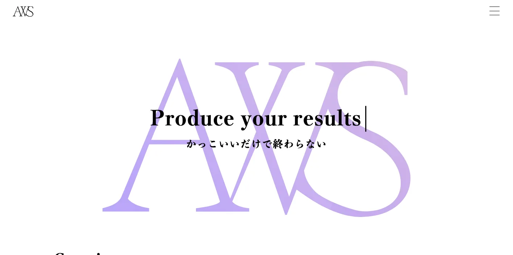
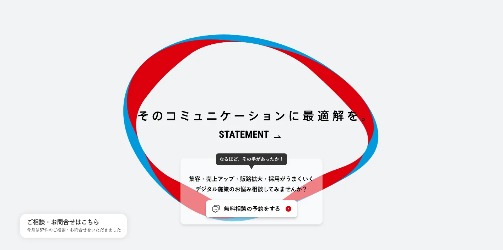
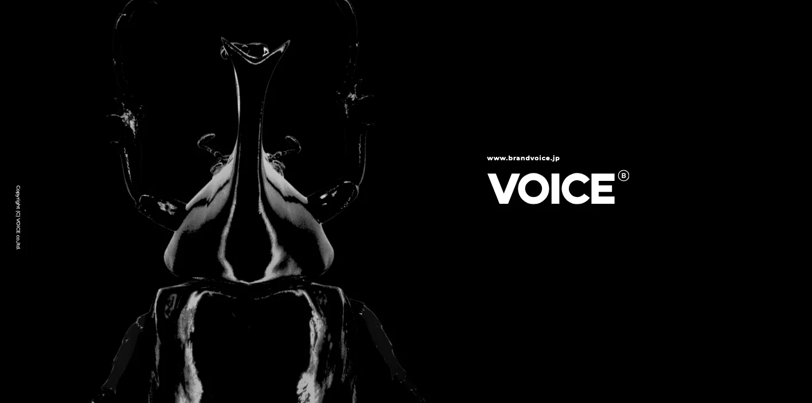
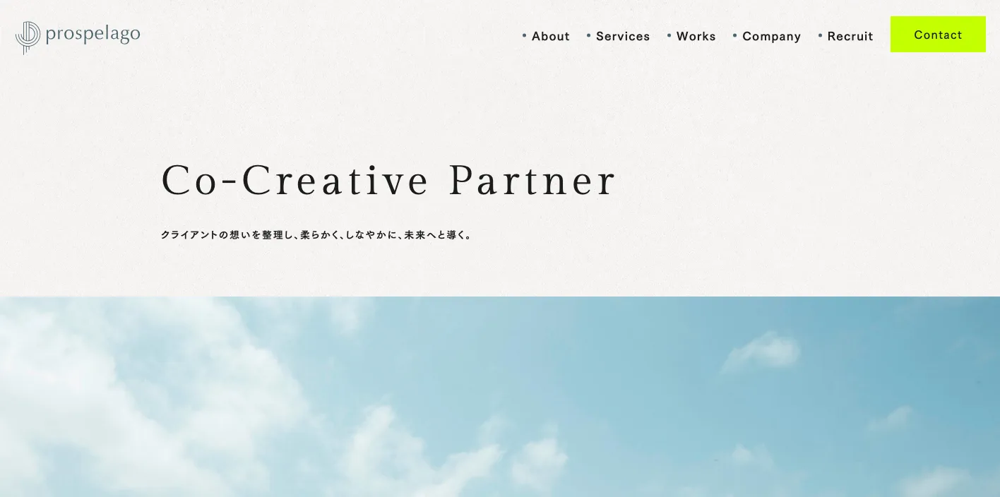
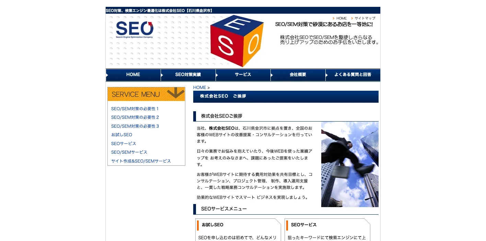
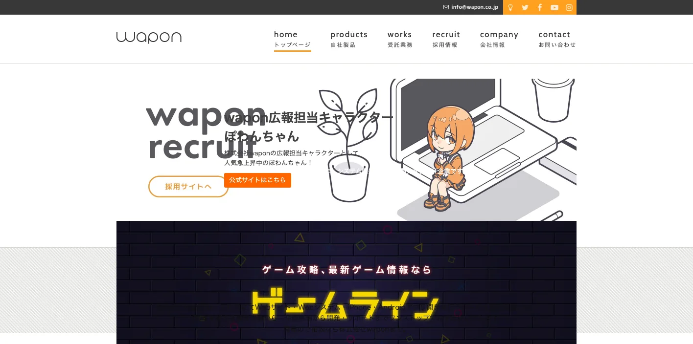
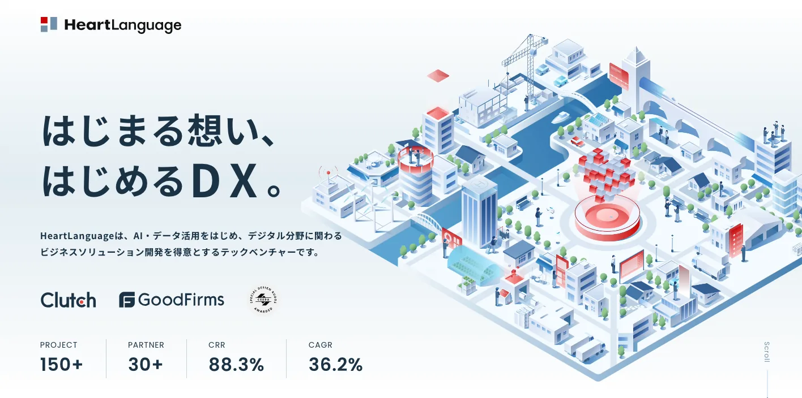
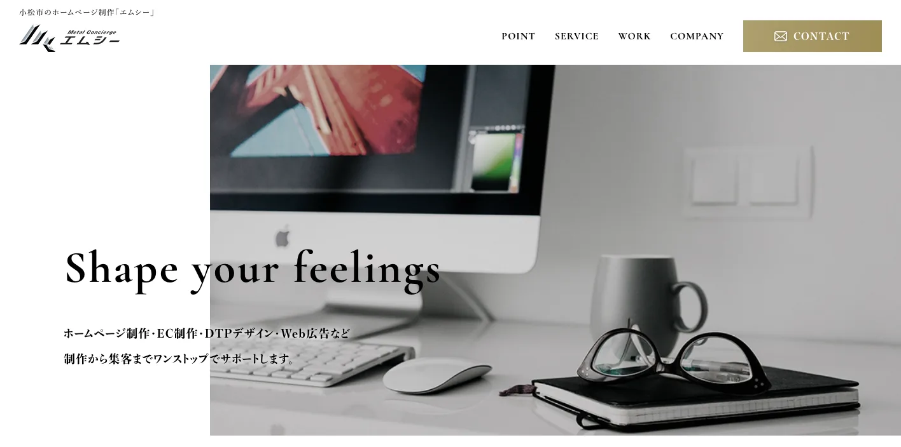
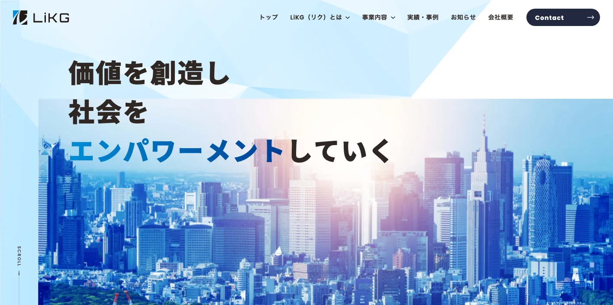

石川県でおすすめのLLMO会社10選｜費用相場と選び方もわかりやすく解説

石川県でLLMO会社を選ぶときは、「金沢のホームページ制作会社」や「石川のSEO会社」という探し方だけでは足りません。金沢市の観光・飲食・宿泊・医療・士業、白山市・野々市市の生活商圏、小松市・能美市の製造と空港周辺、加賀市の温泉観光、能登地域の復興・観光・地域産品では、AI検索で聞かれる質問が大きく変わるからです。
石川県の推計人口は、令和8年3月1日現在で1,086,089人、総世帯数は476,193世帯です。令和6年の県観光統計も公開されており、金沢地域の観光需要が強い一方、能登地域は令和6年能登半島地震と奥能登豪雨の影響を受けました。LLMOでは、県全体を一枚で語るより、金沢、加賀、小松・白山、能登で必要な情報を分けることが重要です。
この記事では、石川県でLLMOに取り組むときに比較したい会社、選び方、費用相場をまとめます。基礎から確認したい方はLLMO対策の基礎記事、北陸の近隣県も見たい方は富山県の比較記事や新潟県の比較記事も参考になります。自社サイトの現状を先に見たい場合は無料LLMO診断から確認できます。
目次

石川県でおすすめのLLMO会社10選
今回は、石川県内に拠点があり、ホームページ制作、SEO、Webマーケティング、広告、システム開発、AI・データ活用、ブランディング、運用改善などの公開情報を確認しやすい会社を中心に、LLMOを明示している全国対応会社も補完的に加えました。石川県内で「LLMO専業」を大きく打ち出す会社はまだ多くないため、AI検索対策そのものだけでなく、サイト構造、FAQ、地域ページ、事例、製品情報、観光情報、採用情報、更新体制まで支援できるかを見ています。
石川県では、金沢市の観光・商業・医療、白山・野々市の生活圏、小松・能美のものづくり、加賀温泉郷と伝統工芸、能登の地域産品・宿泊・復興情報など、AIに答えさせたい質問が地域ごとに変わります。まずは表で向いている企業を確認し、その後に各社の特徴を見てください。
| 会社名 | 拠点性 | 向いている企業 | 支援の軸 |
|---|---|---|---|
| Aifer Web Service | 金沢市 | SEOとデザインを両立したサイト改善を相談したい企業 | ホームページ制作・SEO・Web広告・保守運用 |
| 株式会社日本エージェンシー | 金沢市 | 広告、解析、SEO、SNSを横断して進めたい中小企業 | デジタルマーケティング・Web制作・SEO・広告運用 |
| 株式会社ヴォイス | 金沢市 | 観光、食品、採用、ブランド発信を強めたい企業 | ブランディング・ホームページ制作・映像・採用プロモーション |
| 株式会社プロスペラゴ | 金沢市 | 戦略設計、デザイン、マーケティングを一体で整えたい企業 | ホームページ制作・EC・採用サイト・広告・内製化支援 |
| 株式会社SEO | 金沢市 | 検索流入を土台から見直したい企業 | SEOコンサルティング・サイト制作・SEO/SEM |
| 株式会社wapon | 白山市 | Webサイト、システム、アプリ、AI活用まで相談したい企業 | Web制作・システム開発・SEO・AI/機械学習・DX |
| 株式会社HeartLanguage | 内灘町 | AI・データ活用とWeb制作を同時に進めたい企業 | AIソリューション・データ基盤・Web制作・アプリ開発 |
| 株式会社エムシー | 小松市 | 小松・加賀方面でサイト制作、EC、広告を相談したい企業 | ホームページ制作・EC制作・DTP・Web広告 |
| 株式会社LiKG | 全国対応 | LLMO診断から記事制作まで任せたい企業 | LLMO診断・LLMO×SEO伴走・EEAT記事制作 |
| 株式会社ジオコード | 全国対応 | SEOとAI最適化を実装込みで進めたい企業 | SEO・コンテンツ・AIO/LLMO・サイト修正 |
株式会社AIMAは石川本社の会社ではありませんが、全国対応でLLMO支援を提供しています。月額5万円のLLMO支援は初期費用なし・1ヶ月単位で始められ、質問設計、記事制作、引用チェックに絞って実務を進められます。金沢市、白山市、野々市市、小松市、加賀市、能登地域のように検索文脈が分かれる場合も、まず無料LLMO診断で優先順位を確認できます。
1. Aifer Web Service

Aifer Web Serviceは、石川県金沢市に拠点を置くホームページ制作・SEO系の事業者です。公式サイトでは、ホームページ制作、デザイン制作、Web広告の管理運用、システム開発、制作後のホームページ運用サポートを案内しています。会社概要では、有限会社Aifer Web Serviceとして、2006年設立、金沢市有松の所在地、Webマーケティングやシステム開発などの事業内容を確認できます。
石川県でLLMOを進める場合、検索上位だけでなく、AIが会社の強み、対応エリア、費用感、実績、FAQを読み取れるようにする必要があります。Aiferは、金沢市周辺の士業、専門サービス、不動産、BtoB、地域店舗などで、SEOとデザイン、更新運用をまとめて見直したい企業に向いています。
2. 株式会社日本エージェンシー

株式会社日本エージェンシーは、金沢市新保本に本社を置く総合広告会社です。公式のデジタルマーケティングページでは、Web解析、データ活用設計、O2O戦略、Webサイト制作、スマホアプリ開発、インターネット広告、SEO対策、SNSマーケティングなどを確認できます。石川県だけでなく、富山、福井、東京にも拠点を持っています。
LLMOは、記事だけでは完結しません。金沢の観光・店舗集客、食品や伝統工芸の販路拡大、採用、地域イベント、EC、SNS、広告まで情報がつながっていないと、AIにもユーザーにも伝わりません。日本エージェンシーは、広告とWeb解析を含めて、地方企業のデジタル施策を横断したい企業に向いています。
参考：株式会社日本エージェンシー｜デジタルマーケティングサービス
3. 株式会社ヴォイス

株式会社ヴォイスは、金沢のブランディング＆デザインファームです。公式サイトでは、ホームページ制作、ブランディング、プロモーション、パンフレット制作、動画・テレビCM、ロゴデザイン、採用プロモーションなどを案内しています。金沢市内の企業や店舗、観光・食品・医療・採用など、見せ方が成果に影響しやすい領域で比較しやすい会社です。
AI検索では、ただ情報量を増やすだけでなく、「なぜその会社・商品が選ばれるのか」を一貫した言葉で説明することが大切です。金沢の観光、飲食、工芸、医療、美容、採用では、写真、動画、ブランドストーリー、実績、FAQがつながっているほどAIにも引用されやすくなります。ヴォイスは、ブランドの言語化からWebまで整えたい企業に向いています。
4. 株式会社プロスペラゴ

株式会社プロスペラゴは、石川県金沢市有松に拠点を置くWeb制作会社です。公式サイトでは、ホームページ制作、ECサイト制作、採用サイト制作、ロゴ・コンセプト開発、印刷物デザイン、映像制作、商品開発、Web広告運用、マーケティング戦略設計、内製化支援などを確認できます。会社情報では、金沢本社と大阪拠点、Webサイト企画制作やマーケティング支援などの事業内容が掲載されています。
石川県の企業では、商品やサービスの背景、作り手の思い、地域性、採用の魅力がWeb上で整理されていないケースがあります。プロスペラゴは、事業の「らしさ」を整理し、ホームページ、EC、採用、広告、内製化までつなげたい企業に向いています。LLMOでは、AIが読む一次情報を社内で更新できる仕組みも重要です。
5. 株式会社SEO

株式会社SEOは、石川県金沢市に拠点を置き、全国のWebサイト改善提案・コンサルテーションを行っている会社です。公式サイトでは、SEOサービス、SEO/SEMサービス、サイト作成＆SEO/SEMサービスなどを確認できます。検索エンジンで上位表示されやすいホームページ制作からSEO/SEMまでトータルでサポートするメニューも案内されています。
LLMOは新しい言葉ですが、土台になるのは、サイト構造、見出し、本文、内部リンク、検索意図、サービス説明、FAQなどの基本です。株式会社SEOは、金沢市内や石川県内で、まず検索流入とWebサイトの基礎を見直したい企業に向いています。特に、サービスページが少ない、会社情報が古い、FAQがない企業は、AI対策の前にSEOの基礎改善が必要です。
6. 株式会社wapon

株式会社waponは、石川県白山市に本社を置くWebサイト制作、システム開発、アプリ開発の会社です。公式サイトでは、Webサイト制作、Webシステム、iPhone・Androidアプリ開発を行うIT企業として案内されており、会社情報ではWebマーケティング支援、SEO対策、AI人工知能・機械学習システム開発、DX支援なども確認できます。石川県内では、白山市、金沢市、野々市市、小松市、能美市、加賀市などの打ち合わせ可能範囲も示されています。
LLMOでは、静的な記事だけでなく、商品データ、予約、会員機能、FAQ、在庫、口コミ、事例、業務システムとの連携が必要になることがあります。waponは、白山・野々市・金沢の生活商圏、EC、アプリ、業務システム、AI活用まで含めて相談したい企業に向いています。技術実装を伴うAI検索対策を考える場合に比較しやすい会社です。
7. 株式会社HeartLanguage

株式会社HeartLanguageは、石川県河北郡内灘町に本社を置くテックベンチャーです。公式サイトでは、AI・データ活用をはじめ、デジタル分野に関わるビジネスソリューション開発を得意とする企業として案内されています。会社概要では、ソフトウェア開発、デジタルマーケティング、インターネット関連事業を確認でき、サービスにはAIソリューション構築、データプラットフォーム構築、Webアプリケーション開発、Webサイト制作などが並びます。
石川県でAI検索対策を進めるとき、将来的にはサイト内検索、会員サイト、業務データ、商品データ、問い合わせ履歴なども活用対象になります。HeartLanguageは、内灘町・金沢周辺の企業だけでなく、AI・データ基盤とWebサイト制作を一緒に考えたい企業に向いています。単なる記事追加ではなく、データやシステムを含めた情報設計をしたい場合に候補になります。
8. 株式会社エムシー

株式会社エムシーは、小松市のホームページ制作会社として、ホームページ制作、EC制作、DTPデザイン、Web広告などを案内しています。公式ページでは、制作から集客までワンストップでサポートすること、小松市のさらなる活性化に向けたホームページの重要性、LP、コーポレートサイト、EC、Google・Yahoo・SNS広告などの対応を確認できます。訪問可能エリアとして石川県全域、小松市、加賀市、金沢市が示されています。
小松市、加賀市、能美市では、製造業、建設、観光、温泉、空港、新幹線、EC、地域店舗の質問が金沢とは違います。エムシーは、小松・加賀方面で、サイト制作、EC、広告、紙の販促物までまとめて整えたい企業に向いています。LLMOでも、商品説明、店舗情報、交通、予約、広告LP、FAQをつなげることが大切です。
9. 株式会社LiKG

株式会社LiKGは、LLMOコンサルティングを明示している全国対応会社です。公式サービスページでは、AI検索での露出状況を調査するLLMO診断、LLMO×SEOコンサルティング、EEAT強化記事制作を案内しています。料金は、LLMO診断プラン10万円から、LLMO×SEOコンサルティングプラン30万円から、EEAT強化記事制作5万円/1記事からと公開されています。
石川県の企業がLiKGを比較するなら、県内での取材や撮影よりも、AI検索の現状診断、独自データの活用、構造化データ、記事制作、全国競合との比較を重視する場合です。金沢の観光・医療・士業、石川県の製造業、EC、採用などで、既存SEOはやっているがAI検索でどう見られているか分からない企業に向いています。
10. 株式会社ジオコード

株式会社ジオコードは、SEO対策、コンテンツマーケティング、AIO・LLMOなどのAI最適化を案内している全国対応会社です。公式ページでは、SEO・コンテンツ・オウンドメディアからAIO・LLMOなどAI最適化まで支援すること、通常プラン15万円から、スタンダードプラン月30万円から、コンテンツマーケプラン月20万円からなどの情報を確認できます。AIが理解しやすい情報設計、EEAT強化、構造化データ、一次情報の組み込み、AI生成回答の競合調査なども示されています。
石川県の企業がジオコードを比較するなら、サイト修正や実装を含むSEO・LLMO支援を重視する場合です。金沢の競争が強い業種、県外競合と比較される製造業、観光・EC・医療・採用など、既存サイトの技術改善まで必要な企業に向いています。県内制作会社と分担して、AI検索診断や構造化データを任せる選び方もあります。
参考：株式会社ジオコード｜SEO対策・AIO・LLMOなどAI最適化
石川県でLLMO対策を始める3ステップ
石川県では、金沢の生活・観光サービス、小松・白山の製造業、加賀の温泉、能登の営業・交通情報を同じ方法で扱えません。依頼前に、最初に改善する地域と事業を一つに絞ると、必要な制作会社や予算を判断しやすくなります。
| 手順 | 確認内容 | 石川県での例 |
|---|---|---|
| 1. 対象を絞る | 地域・顧客・目的 | 金沢の予約、加賀の宿泊、小松の商談、能登の営業情報 |
| 2. 公式情報を点検する | 最新性と根拠 | 料金、交通、営業再開、設備、在庫、予約条件 |
| 3. AI回答を調べる | 誤り・不足・競合との差 | 自社名と地域別の質問を10個試す |
特に能登地域の営業状況や交通情報は、古い情報が残ると利用者の判断を誤らせます。提案を比べる際は、記事本数だけでなく「更新日をどう管理するか」「古い情報を誰が直すか」「AIの誤回答をどう確認するか」まで聞いてください。まずは無料LLMO診断で不足項目を整理できます。
石川県のLLMO会社を比較する際のポイント
このブロックでは、会社名の知名度ではなく、石川県で成果に直結しやすい比較軸を整理します。会社紹介では「誰に向いているか」を見ましたが、ここでは発注前に見るべき能力を、金沢、加賀、小松・白山、能登、製造業、観光の文脈に分けます。
金沢市の観光・商業・医療・士業の比較質問を設計できるか
金沢市では、観光客向けの飲食・宿泊・体験、地元生活者向けの医療・美容・不動産・士業、法人向けのBtoBサービスが混在します。AI検索では「金沢で子連れに向く宿」「金沢駅から行きやすいクリニック」「金沢市の相続に強い専門家」のように、地名、目的、条件が組み合わされます。
LLMO会社には、単に「金沢市対応」と書くだけでなく、利用者の質問を分解し、料金、アクセス、予約、対応範囲、専門性、実績、よくある不安をページに落とし込めるかを確認してください。観光業と士業では必要な根拠が違うため、同じテンプレートを貼る会社は避けたほうが安全です。
白山・野々市・小松・加賀の生活商圏と産業商圏を分けられるか
白山市、野々市市、能美市、小松市、加賀市は、金沢市の隣接・通勤圏でありながら、製造、物流、住宅、大学、温泉、空港、新幹線などの文脈があります。生活者向けの店舗や医療だけでなく、工場、建設、物流、EC、観光、採用の情報設計も必要です。
たとえば小松では製造や空港、加賀では温泉と観光、白山では生活商圏と工業団地、野々市では若い世帯や店舗サービスの質問が強くなります。LLMO会社を選ぶときは、石川県内の地域名を並べるだけでなく、地域ごとにAIが答えるべき質問を分けられるかを見てください。
繊維、機械、金属、食品、伝統工芸のBtoB情報を説明できるか
石川県には、繊維、機械、金属、食品、九谷焼、加賀友禅、輪島塗、山中漆器など、技術や作り手の情報が価値になる産業があります。BtoBでは、設備、素材、加工範囲、対応ロット、納期、品質管理、認証、図面対応、試作、導入実績が比較材料になります。
LLMO会社には、製品ページをきれいにするだけでなく、営業資料や現場の説明をWeb上の一次情報に変換する力が必要です。AIは曖昧な説明を補ってくれません。むしろ、古い情報や薄い会社概要をもとに誤解して回答する可能性があります。製造業では、社内の技術者や営業担当と一緒に情報を棚卸しできる会社を選びましょう。
金沢・加賀温泉郷・白山・能登の観光情報を最新化できるか
石川県の観光は、金沢、加賀温泉郷、白山、能登で質問が変わります。金沢では周遊、食、文化体験、外国人対応、混雑。加賀では温泉、宿泊、送迎、家族旅行。白山では自然、登山、雪、アクセス。能登では営業再開、交通、復旧状況、地域産品、宿泊可否が重要になります。
観光・宿泊・飲食業がLLMO会社を選ぶなら、記事制作だけでなく、営業時間、予約、交通、イベント、天候、災害による変更、キャンセル、周辺観光、外国語情報を更新できる体制を見てください。令和6年以降の石川県では、特に能登関連の古い情報を放置しないことが信頼に直結します。
能登地域の復興・営業再開・支援制度の情報を慎重に扱えるか
能登地域では、AI検索で「営業しているか」「道路は通れるか」「配送できるか」「宿泊できるか」「支援制度はあるか」といった実務的な質問が出やすくなります。ここで古い情報を出すと、ユーザーに迷惑がかかり、事業者の信頼も落ちます。
LLMO会社には、一次情報の確認、更新日表示、公式情報へのリンク、営業状況の差し替え、災害・復旧に関する表現の慎重さが必要です。能登の事業者を支援する場合は、SEO記事を量産するより、正確な営業情報、問い合わせ導線、予約・配送・交通のFAQを優先する会社を選んでください。
県内密着と全国対応を、作業内容で使い分けられるか
石川県内の会社は、現地取材、撮影、地域の商圏理解、観光や工芸の肌感覚に強いことが多いです。一方で、LLMO専業やSEO大手は、AI検索の診断、構造化データ、既存記事改善、全国競合の比較に強い場合があります。
どちらが正しいというより、作業内容で選ぶのが現実的です。現場撮影や地域取材が必要なら県内会社、AI検索での露出状況を分析したいならLLMOを明示している会社、両方必要なら県内制作会社と全国LLMO会社の分担も選択肢になります。
参考：石川県の人口と世帯（令和8年3月1日現在）、令和6年 統計からみた石川県の観光、石川県統計書 令和6年 鉱工業
石川県のLLMO会社に依頼する費用相場
LLMOの費用は、診断だけなのか、記事制作まで含むのか、サイト改修や撮影、EC、システム開発まで必要なのかで変わります。石川県では、金沢の観光・医療・士業、白山・野々市の生活商圏、小松・能美の製造、加賀温泉郷の宿泊、能登の復興・営業情報のように、追加で作るべきページやFAQの量が業種によって大きく変わります。
| 依頼内容 | 費用目安 | 石川県での考え方 |
|---|---|---|
| LLMO診断・AI検索の現状確認 | 無料〜10万円前後 | 自社名、地域名、業種名でAIにどう出るかを見る段階 |
| 小規模なSEO・LLMO運用 | 月額5万円〜15万円前後 | FAQ、地域ページ、既存記事改善を小さく回す段階 |
| 伴走型のSEO・LLMO支援 | 月額15万円〜30万円前後 | 競合調査、構成作成、構造化データ、改善提案、定例を含む段階 |
| サイト制作・改修込み | 30万円台〜200万円超 | 撮影、採用、EC、予約、製品情報、システム連携の有無で広がる |
| 製造業・観光・多拠点の本格運用 | 月額30万円以上 | 複数地域、製品カテゴリ、営業資料、事例制作まで必要な段階 |
まずは診断だけなら無料〜10万円前後から始めやすい
最初にやるべきことは、AI検索で自社がどう扱われているかを確認することです。自社名、サービス名、地域名、競合名、料金、評判、比較などで質問し、AIが何を根拠に回答しているかを見ます。ここを飛ばして記事を増やすと、見当違いの質問に答えるページばかり作ることになります。
石川県の場合、「金沢市 歯科 おすすめ」「小松市 製造業 試作」「加賀温泉 子連れ 宿」「白山市 工務店 比較」「能登 営業再開 宿泊」「九谷焼 ギフト 法人」のように、地名と目的の組み合わせが多くなります。診断段階では、どの質問で選ばれるべきかを決めることが重要です。
小さく始めるなら月額5万円〜15万円帯が入口になる
小規模事業者や地域店舗なら、最初から大きな予算を組む必要はありません。既存ページの見出し改善、FAQ追加、会社情報の整理、地域ページの追加、Googleビジネスプロフィールの見直しだけでも、AIが理解しやすい状態に近づきます。
金沢、白山、野々市、小松、加賀の生活商圏では、料金、予約、駐車場、駅やインターからの距離、対応エリア、納期、相談の流れ、キャンセル、支払い方法など、基本情報が問い合わせ前の不安を減らします。この価格帯では、派手な施策よりも、AIが参照できる情報の欠落を埋めることが現実的な成果になります。
伴走支援の中心帯は月額15万円〜30万円前後
毎月改善を続けるなら、月額15万円〜30万円前後が一つの中心帯です。この価格帯では、競合調査、AI検索での露出調査、記事構成、既存ページ改善、構造化データ、レポート、定例打ち合わせまで含まれやすくなります。
石川県の企業では、製造、観光、食品、伝統工芸、医療福祉、採用など、社内にある一次情報の棚卸しが必要な業種ほど伴走支援が向いています。社内に担当者がいるなら、LLMO会社には戦略と構成を任せ、社内で技術情報や現場情報を出す形にすると費用対効果が上がります。
制作・撮影・EC・採用まで含めると総額は広がる
ホームページを作り直す、写真撮影をする、動画を作る、採用ページを整える、ECや予約システムとつなぐ場合は、費用が大きく変わります。石川県では、観光施設、旅館、食品メーカー、伝統工芸、製造業、医療、住宅、地域店舗で、写真や事例が成果に直結しやすいです。
制作費だけを見るのではなく、公開後に誰が更新するのか、FAQを追加できるのか、AI検索での出方を見て直せるのかを確認してください。安く作っても、季節情報、営業情報、製品情報、交通情報が古くなればLLMOの効果は落ちます。
能登・加賀・金沢を同時に狙うならページ数と更新頻度を見積もる
金沢だけを狙う場合と、加賀温泉郷、白山、小松、能登まで狙う場合では、必要なページ数が変わります。ただし、地名だけを差し替えた薄いページは逆効果です。各地域の商圏、交通、観光、産業、利用者の不安、提供できるサービスの違いまで書けるかが重要です。
見積もりでは「何ページ作るか」だけでなく、「各ページで何を答えるか」まで確認しましょう。とくに能登関連では、更新日、営業状況、交通、予約、配送、支援制度など、古くなると困る情報を誰が更新するかを先に決めておくべきです。
参考：株式会社LiKG｜LLMOコンサルティング、株式会社ジオコード｜SEO対策・AI最適化、株式会社wapon｜Webサイト制作
石川県のLLMO会社に関するよくある質問
石川県のLLMO会社に依頼する意味はありますか？
あります。石川県は金沢市の観光・商業、白山・野々市の生活商圏、小松・加賀の製造と温泉、能登の復興・観光・地域産品で検索意図が大きく変わります。地名、業種、目的別に一次情報を整理し、AIが誤解なく紹介できる状態にする意味があります。
石川県内の会社でないとLLMOは任せられませんか？
必ずしも県内本社である必要はありません。現地取材、撮影、観光・地域商圏の理解が必要なら県内会社が向きます。一方で、AI検索の診断、構造化データ、既存記事改善、全国競合との比較はLLMOを明示している全国対応会社も選択肢になります。
金沢市と小松市・加賀市では、対策内容は変わりますか？
変わります。金沢市は観光、飲食、宿泊、医療、美容、士業、教育などの比較質問が多くなりやすい一方、小松市・加賀市は製造、建設、温泉、空港・新幹線、EC、採用の質問が強くなります。同じ県内でもページで答える内容を分ける必要があります。
能登地域の事業者でもLLMOは必要ですか？
必要です。能登地域では営業再開、予約、交通、配送、復旧状況、支援制度、地域産品、観光再開など、古い情報が残るとユーザーが迷いやすい論点があります。最新の公式情報と自社の一次情報を継続して更新することが重要です。
石川県の製造業でもLLMOは使えますか？
使えます。繊維、機械、金属、食品、伝統工芸、電子部品などでは、設備、素材、加工範囲、品質管理、納期、対応ロット、図面対応、導入実績をAIが読み取れる形で出すことが大切です。BtoBでは製品ページ、技術資料、事例、FAQの精度が問い合わせ前の比較に効きます。
観光・宿泊・飲食業では何を整えるべきですか？
営業時間、予約、アクセス、駐車場、周遊ルート、季節イベント、外国人対応、アレルギー、決済、キャンセル、災害や天候による変更を整えます。金沢、加賀温泉郷、白山、能登では利用者の不安が違うため、FAQを地域別に作ると効果が出やすくなります。
石川県のLLMO費用はどれくらい見ておけばよいですか？
診断だけなら無料から10万円前後、小さな運用なら月額5万円から15万円前後、伴走支援は月額15万円から30万円前後が目安です。撮影、取材、サイト改修、EC、採用、製品ページ、多地域展開を含めると総額は上がります。
成果が出るまでの期間はどれくらいですか？
まず3か月から6か月を目安に見ます。既存サイトの情報量、競合の強さ、FAQや事例の整備状況、構造化データ、更新体制によって変わります。短期で断定せず、AI検索での出方を観測しながら改善する進め方が現実的です。
石川県でLLMO会社を選ぶなら、金沢中心と能登・加賀の情報更新を分けて考えましょう
石川県のLLMO会社選びでは、金沢市、白山市・野々市市、小松市・能美市、加賀市、能登地域を同じ文章でまとめないことが重要です。金沢の観光・医療・士業、白山・野々市の生活商圏、小松・能美の製造、加賀の温泉観光、能登の復興・営業情報では、AI検索で聞かれる質問がかなり違います。
まずは、自社が「近隣の生活者」を狙うのか、「県内広域の見込み客」を狙うのか、「製造・観光・食品・採用など目的検索」を狙うのかを決めてください。そのうえで、戦略だけでなく、ページ改修、記事制作、FAQ、構造化データ、写真、更新運用まで実行できる会社を選ぶと前に進めやすいです。迷う場合は、LLMO対策の基礎を確認し、必要なら無料LLMO診断やお問い合わせから、自社がどの質問で選ばれるべきかを整理していきましょう。